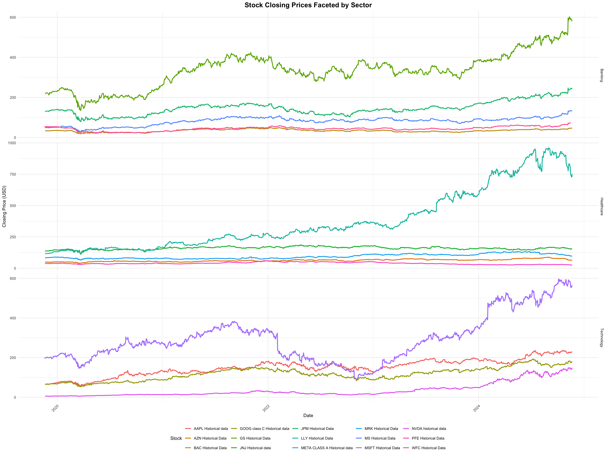

Code
# Load necessary libraries
library(ggplot2)
library(dplyr)
Attaching package: 'dplyr'The following objects are masked from 'package:stats':
filter, lagThe following objects are masked from 'package:base':
intersect, setdiff, setequal, unionCode
library(readr)
library(tidyr)
library(lubridate)
Attaching package: 'lubridate'The following objects are masked from 'package:base':
date, intersect, setdiff, unionCode
library(zoo) # for rollmean
Attaching package: 'zoo'The following objects are masked from 'package:base':
as.Date, as.Date.numericCode
# List the CSV files for each sector
banking_files <- list.files(path = "./Datasets/Banking/", pattern = "*.csv", full.names = TRUE)
banking_files <- banking_files[!grepl("_modified", banking_files)]
tech_files <- list.files(path = "./Datasets/TECH/", pattern = "*.csv", full.names = TRUE)
tech_files <- tech_files[!grepl("_modified", tech_files)]
health_files <- list.files(path = "./Datasets/Healthcare and Pharma/", pattern = "*.csv", full.names = TRUE)
health_files <- health_files[!grepl("_modified", health_files)]
save_to_csv <- function(data, file_path) {
write_csv(data, file_path)
}
stock_file_mapping <- list()
# Define the function to read and process data for a single file and sector
read_sector_data <- function(file_path, sector) {
data <- read_csv(file_path, show_col_types = FALSE)
colnames(data) <- tolower(gsub("\\s+", "_", colnames(data)))
required_columns <- c("date", "close", "open", "high", "low")
missing_columns <- setdiff(required_columns, colnames(data))
if (length(missing_columns) > 0) {
stop(paste("Missing required columns in file:", file_path,
"-> Missing columns:", paste(missing_columns, collapse = ", ")))
}
data <- data |>
mutate(
date = mdy(date),
close = as.numeric(gsub("\\$", "", close)),
open = as.numeric(gsub("\\$", "", open)),
high = as.numeric(gsub("\\$", "", high)),
low = as.numeric(gsub("\\$", "", low)),
volume = as.numeric(gsub(",", "", volume))
) |>
mutate(
Sector = sector,
Source = tools::file_path_sans_ext(basename(file_path))
)
stock_file_mapping[[unique(data$Source)]] <<- file_path
return(data)
}
# Read and combine data for each sector
banking_data <- bind_rows(lapply(banking_files, read_sector_data, sector = "Banking"))
tech_data <- bind_rows(lapply(tech_files, read_sector_data, sector = "Technology"))
health_data <- bind_rows(lapply(health_files, read_sector_data, sector = "Healthcare"))
# Combine all sector data into one dataset
combined_data <- bind_rows(banking_data, tech_data, health_data)
# Rename 'Source' to 'Stock' before further processing
combined_data <- combined_data |>
rename(Stock = Source)
# Create the faceted line chart with sectors arranged in rows
p <- ggplot(combined_data, aes(x = date, y = close, color = Stock)) +
geom_line(size = 1) +
facet_grid(Sector ~ ., scales = "free_y") + # Arrange facets in rows
labs(
title = "Stock Closing Prices Faceted by Sector",
x = "Date",
y = "Closing Price (USD)",
color = "Stock"
) +
theme_minimal() +
theme(
plot.title = element_text(hjust = 0.5, size = 16, face = "bold"),
axis.text.x = element_text(angle = 45, hjust = 1),
legend.position = "bottom"
)Warning: Using `size` aesthetic for lines was deprecated in ggplot2 3.4.0.
ℹ Please use `linewidth` instead.Code
# Display the plot
print(p)
Code
print(banking_files)[1] "./Datasets/Banking/BAC Historical Data.csv"
[2] "./Datasets/Banking/GS Historical Data.csv"
[3] "./Datasets/Banking/JPM Historical Data.csv"
[4] "./Datasets/Banking/MS Historical Data.csv"
[5] "./Datasets/Banking/WFC Historical Data.csv"